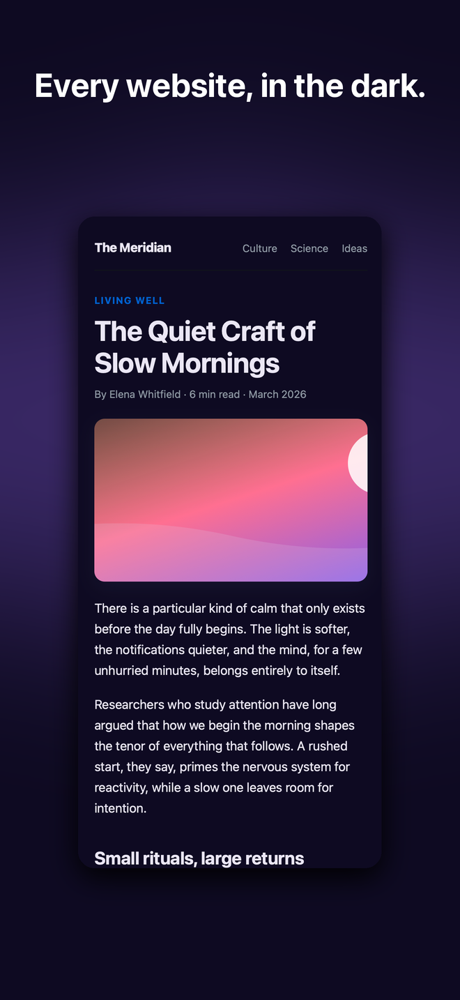

所有网站的深色主题
Night Crow For Safari
为 Safari 中所有网站提供智能原生深色模式。动态色彩重映射确保照片色彩真实且文字清晰可读，支持按网站定制规则、预设以及日出至日落的时间调度。
适用于 macOS、iOS 和 iPadOS

功能
真正的黑夜模式
动态模式
读取每个网站的自有颜色并自动将其转换为深色模式。照片保持原样，文字清晰可读。
四种主题模式
动态、过滤、过滤 + 和静态。根据每个网站的适配情况，随时切换不同的模式。
网站规则
启用、禁用或微调任意网站，精确到如 example.com/docs 这样的单个部分。
智能调度
跟随您的系统外观，或设定一个时间窗口，或根据您所在地的日落至日出时间自动切换。
主题预设
提供 调暗、午夜、石板、夜暮 和 高对比度 五种主题，每种一键切换。
自定义 CSS 与字体
在每个网站注入自定义 CSS，覆盖页面字体，并添加描边以增强文字清晰度。
已支持深色模式
支持网站自带深色主题，自动识别并保留原样，避免双重变暗。
原生隐私设计
无需账号，无需分析，无需追踪。您的浏览数据永远不会离开设备。
工作原理
秒级启动并运行
1
从 App Store 安装
下载 Night Crow。它是一款轻量级、原生的 Safari 扩展。
2
在 Safari 中启用
打开 Safari 设置，进入扩展，开启 Night Crow 并允许其在网站上运行。
3
在暗色模式下浏览
所有网站都会自动切换为深色模式。您只需从工具栏弹出窗口中调整任意页面的设置即可。
为何选择 Night Crow
专为 Safari 用户打造
照片依然美丽
动态模式通过重新构建颜色而非整体反转页面，确保图片和视频保持真实色彩。
始终可读
感知对比度底线确保重映射文本在所有网站上都清晰可读，即使作者偷工减料。
说您的语言
已完全本地化至 33 种语言：包括弹出窗口、设置、新手引导以及本页面。
一次性付费
仅需一杯咖啡的价格，即可永久拥有。无需订阅，无广告，无额外推销。
来自 CorvusDevs 的其他内容
注重隐私的 macOS、iOS 和 Safari 应用。